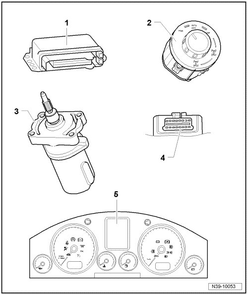
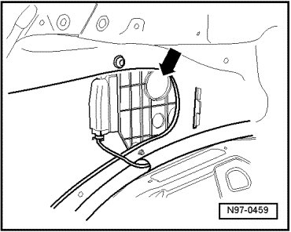
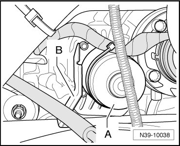

Rear Final Drive
Electrical and Electronic Components and Locations

1 Differential lock control module (J647)
• Removing and installing, refer to --> [ Differential Lock Control Module ] Differential Lock Control Module.
2 Transfer case operating unit (E473)
• Allocation.
3 Differential lock motor (V304)
• Removing and installing, refer to --> [ Differential Lock Motor ] Differential Lock Motor.
• The following components are integrated into the differential lock motor (V304):
Motor temperature sensor (G407)
Differential lock position sensor 1 (G460)
Differential lock position sensor 2 (G461)
Brake for locking motor
4 Data Link Connector (DLC)
5 Multi function display in instrument panel insert
• Indicates condition and information about differential lock in rear final drive.
Component Location of Differential Lock Control Module (J647)

The differential lock control module (J647) is located behind the side trim on the left rear wheel housing - arrow -.
Differential lock control module (J647), removing and installing. Refer to --> [ Differential Lock Control Module ] Differential Lock Control Module.
Component Location of Transfer Case Operating Unit (E473)

The transfer case operating unit (E473) - 1 - is located in the shift cover - 2 - of the center console.
Transfer case operating unit (E473), removing and installing.
Component Location of Differential Lock Motor (V304)

The differential lock motor (V304) - A - is located in front of the left flange shaft on the rear final drive.
Differential lock motor (V304), removing and installing. Refer to --> [ Differential Lock Motor ] Differential Lock Motor.
DLC

The DLC is located in the cover of the driver's side footwell.